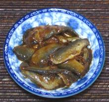

Prahok:
This is your raw material, Prahok, fish or fish chunks fermented for a few months to 3 years. Asian markets serving a Southeast Asian Community will have a selection of such jars made with various fish. They will almost always be from Vietnam and labeled "Mam Cá (name of fish)". The main ingredients should be Fish, Salt, Sugar, Powdered Grilled Rice, and a preservative. For some applications this preserved fish can simply be ground up as plain Prahok.Pa Daek / Nam Pla Raa:
These are the names used in Laos and Issan (northeastern Thailand) where much of the population is Lao. For these cuisines always select versions made from fresh water fish like Gourami or Mudfish (Snakehead). It is usually just ground up for use in that region. Typically, what's in the jar will look something like this. You want to spoon out about 2 Tablespoons per cup of water you will be using, maybe 3 Tablespoons if you want it a bit stronger.
1. In a saucepan place a cup of Water
for every 2 to 3 Tablespoons of fish you will be using. Bring it to a
boil.
2. Stir in the Fish and bring back to a simmer.
Simmer for about 15 minutes, squishing the fish now and then. Some types
will break up, others will remain firm.
3. Pour through a strainer, pressing down on the
fish. Discard the solids and keep the liquid.
4. Strain the liquid through a piece of muslin to
remove small particles. If the muslin has too high a thread count (from
expensive bed sheets) it will filter very slowly. Actually, I use an
extremely fine Asian wire strainer with a mesh not much larger than
muslin.
5. Store in a cool place in a sealed container.